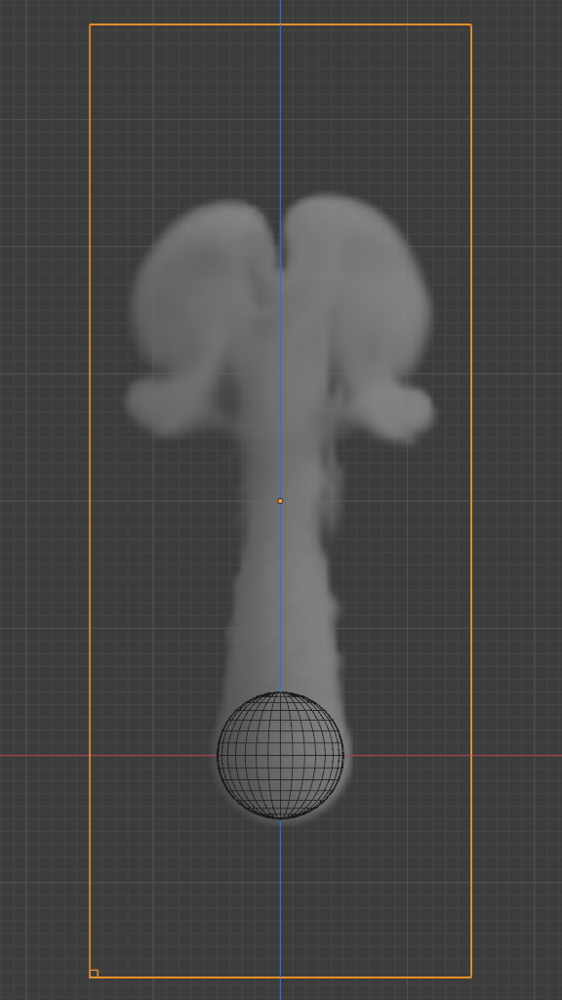

设置¶
参考
- 面板
- 类型
域
The domain object contains the entire simulation. Fluid simulations cannot leave the domain, it will either collide with the edge or disappear, depending on the domain's settings.
Keep in mind that large domains need higher resolutions and longer bake times. You will want to make it just large enough that the simulation will fit inside it, but not so large that it takes too long to compute the simulation.
To create a domain, add a cube and transform it until it encloses the area where you want the simulation to take place. Translation, rotation, and scaling are all allowed. To turn it into a fluid domain, click Fluid in the tab, then select Domain as the fluid Type.
Note
You can use other shapes of mesh objects as domain objects, but the fluid simulator will use the shape's Bounding Box as the domain bounds. In other words, the actual shape of the domain will still be rectangular.
- 域类型
A fluid domain can control either liquid or gas flows. Liquid domains take all liquid flow objects that intersect with the domain into consideration. Gas domains consider all intersecting Smoke, Fire, and Smoke + Fire flow objects. It is not possible to change the domain type dynamically.
- 细分精度
The fluid domain is subdivided into many "cells" called Voxels which make up "pixels" of fluid. This setting controls the number of subdivisions in the domain. Higher numbers of subdivisions are one way of creating higher resolution fluids.
Since the resolution is defined in terms of "subdivisions", larger domains will need more divisions to get an equivalent resolution to a small domain. For example, a one meter cube with 64 Resolution Divisions will need 128 divisions to match a 2 meter cube. The dimension used as the base division is the longest dimension of the objects bounding box. To help visualize the voxel size, the Resolution Divisions can be previewed with a small cube shown in the 3D Viewport, to show the size of these divisions.
- Time Scale
Controls the speed of the simulation. Low values result in a "slow motion" simulation, while higher values can be used to advance the simulation faster (good for generating fluids to be used in still renders).
- CFL 编号
Determines the maximum velocity per grid cell and is measured in grid cells per time step. Fluid is only allowed to move up to this velocity in one time step. If this threshold is exceeded the solver will subdivide the simulation step.
In general, greater CFL (Courant–Friedrichs–Lewy) numbers will minimize the number of simulation steps and the computation time. Yet it will yield less physically accurate behavior for fast fluid flows. Smaller CFL numbers result in more simulation steps per frame, longer simulation times but more accurate behavior at high velocities (e.g. fast fluid flow colliding with obstacle).
Note
When lowering the CFL number it is recommended to increase the maximum number of time steps. Similarly, when increasing the CFL number the minimum number of time steps should be adjusted.
- 使用自适应时间步数
Lets the solver automatically decide when to perform multiple simulation steps per frame. It takes into account the maximum and minimum number of time steps, the current Frame Rate, and the Time Scale.
- 时间步长最大值
Maximum number of allowed time steps per frame. If needed, the solver will divide a simulation step up to this number of sub-steps.
- Timesteps Minimum
Minimum number of allowed time steps per frame. The solver will always perform at least this number of simulation steps per frame.
- 重力
By default the fluid solver will use the global scene gravity. This behavior can be disabled in the scene settings. Disabling the global gravity will enable the fluid gravity options.
- Empty Space Gas Only
Value under which voxels are considered empty space to optimize rendering.
- Delete in Obstacle
Remover any volume of fluid that intersects with an obstacle inside the domain.
边界碰撞¶
参考
- 面板
- 类型
Domain (Gas)
Controls which sides of the domain will allow fluid "pass through" the domain, making it disappear without influencing the rest of the simulation, and which sides will deflect fluids.
烟雾¶
参考
- 面板
- 类型
Domain (Gas)
- 密度浮力
Buoyant force based on smoke density.
Values above 0 will cause the smoke to rise (simulating smoke which is lighter than ambient air).
Values below 0 will cause smoke to sink (simulating smoke which is heavier than ambient air).
- 热度浮力
Controls how much smoke is affected by temperature. The effect this setting has on smoke depends on the per flow object Initial Temperature:
Values above 0 will result in the smoke rising when the flow object Initial Temperature is set to a positive value, and smoke sinking when the flow object Initial Temperature is set to a negative value.
Values below 0 will result in the opposite of positive values, i.e. smoke emitted from flow objects with a positive Initial Temperature will sink, and smoke from flow objects with a negative Initial Temperature will rise.
Note that smoke from multiple flow objects with different temperatures will mix and warm up or cool down until an equilibrium is reached.
- 涡量
Controls the amount of turbulence in the smoke. Higher values will make lots of small swirls, while lower values make smoother shapes.
Comparison of different amounts of vorticity.¶ Domain with a vorticity of 0.0.¶

Domain with a vorticity of 0.2.¶
溶解¶
Allow smoke to dissipate over time.
- 时间
Speed of smoke's dissipation in frames.
- 减慢
Dissolve smoke in a logarithmic fashion. Dissolves quickly at first, but lingers longer.
火焰¶
参考
- 类型
域
- 面板
- 反应速度
How fast fuel burns. Larger values result in smaller flames (fuel burns before it can go very far), smaller values result in larger flames (fuel has time to flow farther before being fully consumed).
- 火焰烟雾
Amount of extra smoke created automatically to simulate burnt fuel. This smoke is best visible when using a "Fire + Smoke" Flow Object.
- 涡量
Vorticity for flames in addition to the global fluid Vorticity.
- 最高温度
Maximum temperature of flames. Larger values result in faster rising flames.
- 最小值
Minimum temperature of flames. Larger values result in faster rising flames.
- 火焰颜色
Color of flame created by burnt fuel.
液体¶
参考
- 类型
域
- 面板
Liquid settings control the behavior of the particles which the simulation consists of. Enabling the liquid checkbox will automatically create a particle system for the simulation. This particle system visualizes the flow of the simulation. Visualizing the liquid particles is optional. The fluid simulation will make use of all the fields without an attached particle system too.
Note
Disabling the liquid checkbox will delete the attached particle system and its settings.
- 模拟方法
Determines the particle simulation method. Currently, FLIP is the only option to choose from.
- FLIP 比率
How much FLIP velocity to use when updating liquid particle velocities. A value of 1.0 will result in a completely FLIP based simulation. Completely FLIP based simulations produce more chaotic splashes and are preferable when simulating greater quantities of liquid. When using smaller values the behavior will be less turbulent and splashes are more subtle. This is optimal when simulating scenes where the liquid is supposed to be on a small scale.
- System Maximum
Maximum number of fluid particles that are allowed in the simulation. If this field is set to a non-zero value the simulation will never contain more than this number of fluid particles. Otherwise, with a value of zero the solver will always sample new particles when needed.
- 粒子半径
The radius of one liquid particle in grid cells units. This value describes how much area is covered by a particle and thus determines how much area around it can be considered as liquid. A greater radius will let particles cover more area. This will result in more grids cell being tagged as liquid instead of just being empty.
Whenever the simulation appears to leak or gain volume in an undesired, non physically accurate way it is a good idea to adjust this value. That is, when liquid seems to disappear this value needs to be increased. The inverse applies when too much liquid is being produced.
- Sampling
Factor that is used when sampling particles. A higher value will sample more particles. Note that particle resampling occurs at every single simulation step.
- Randomness
New particles are sampled with some randomness attached to their position which can be controlled by this field. Higher values will sample the liquid particles more randomly in inflow regions. With a value of 0.0 all new particles will be sampled uniformly inside their corresponding grid cells.
When trying to create a laminar inflow (with little randomness) or more turbulent flows (with greater randomness) this value can be useful.
- 粒子最大值
The maximum number of liquid particles per grid cell. During a simulation the number of liquid particles in a cell can fluctuate: Particles can flow into other cells or can get deleted if they move outside the narrow band. Resampling will add new particles considering this maximum.
This value sets the upper threshold of particles per cell. It is also a good way to estimate how many particles there can be in your simulation (one needs to take grid resolution into account too). This can be useful before baking and when planning a simulation.
- 最小值
The minimum number of liquid particles per grid cell. Similarly to the maximum particle threshold, this value ensures that there are at least a certain amount of particles per cell.
- 窄带宽度
Controls the width in grid cell units of the narrow band that liquid particles are allowed to flow in. A high value will result in a thicker band and can result in an inflow region completely filled with particles. Unless the goal of the simulation is to visualize the liquid particles it is recommended to not increase the band width significantly as more particles slow down the simulation.
In some situations increasing this value can help create volume when the simulation appears to leak. In all other cases it is best to keep the narrow band as thin as possible since the liquid surface contains most details and simulating particles inside the liquid is not an optimal use of computing resources.
See also
The narrow band is an implementation of Narrow Band FLIP for Liquid Simulations.
- 分数障碍
Enables finer resolution in fluid / obstacle regions (second order obstacles). This option reduces the "stepping effect" that results when an obstacles lies inclined inside the domain. It also makes liquid flow more smoothly over an obstacle.
- Obstacle-Fluid Threshold
Value to control the smoothness of the fractional obstacle option. Smaller value reduce the "stepping effect" but may result particles sticking to the obstacle.
- Bake Data, Free Data
This option is only available when using the Modular cache type. Bake Data simulates and stores the base of the fluid simulation on drive. Both gas and liquid simulations can add refinements on top of this (e.g. gas simulations can add noise, liquid simulations can add a mesh or secondary particles or both).
The progress will be displayed in the status bar. Pressing Esc will pause the simulation.
Once the simulation has been baked, the cache can be deleted by pressing Free Data. It is possible to pause or resume a Bake All process.